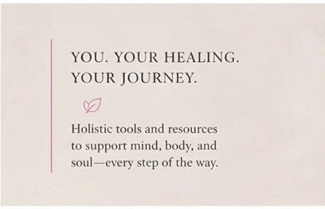
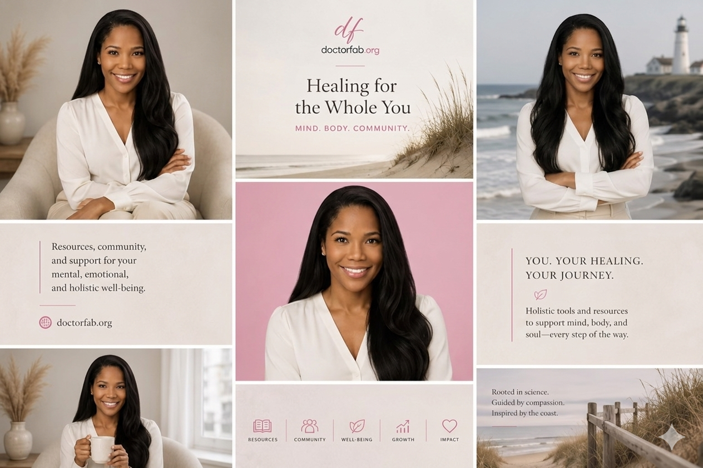
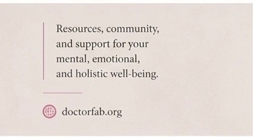

Trauma-Informed Therapy
Compassionate support for experiences that live in the mind, body, and nervous system.
doctorfab.org
Mind. Body. Community.
Cape-inspired trauma support, holistic tools, and community-centered resources for a steadier path back to yourself.

Dr. Fabiola Jean Taylor blends evidence-based therapy, mindfulness, somatic awareness, and community-centered resources to support children, adults, and families through meaningful, compassionate change.
Brand Feeling

Meet Dr. Fab
Dr. Fabiola Jean Taylor is a trauma specialist who brings warmth, clinical insight, and holistic perspective to the healing process. Her work honors the full person: thoughts, emotions, body, relationships, culture, and community.
Whether you are seeking resources, therapeutic language, practical tools, or deeper support, Doctor Fab is a place to feel oriented, grounded, and less alone.
Support Areas
Compassionate support for experiences that live in the mind, body, and nervous system.
Tools for noticing body cues, regulating stress, and rebuilding a sense of safety.
Grounding practices that help create space between what happened and what is possible next.
Resources for children, adults, caregivers, and families moving toward healthier patterns.
Work With Dr. Fab
Best first step
A gentle consultation path for people looking for trauma-informed, whole-person support.
Request a ConsultationDigital resource hub
Practices, reflections, and tools for people who want grounding support between sessions or before they are ready for deeper care.
Explore the SanctuaryCommunity impact
Trauma-informed education and wellness conversations for schools, teams, caregivers, and community spaces.
Bring Dr. Fab InResources
Explore reflections, practices, and therapeutic resources designed to support mental, emotional, and holistic well-being, with a calm Cape rhythm that makes healing feel more approachable.
Visit the Therapeutic Lexicon
Therapeutic Lexicon
The process of returning the body toward steadiness after stress, activation, or overwhelm.
Learning to notice sensations, tension, breath, posture, and body signals with curiosity.
An approach that prioritizes safety, choice, empowerment, culture, and trust.
Small practices that help bring attention back to the present moment and the body.
Doctor Fab's Healing Sanctuary
The Healing Sanctuary is a growing collection of practices, reflections, and resources for people who want support between sessions, during transitions, or while learning how healing works.
Begin Here
Reach out to book a consultation, join the Sanctuary list, or bring Dr. Fab into a community conversation.
Share what you are looking for, and take the next gentle step.
Contact Doctor Fab Get Sanctuary Updates